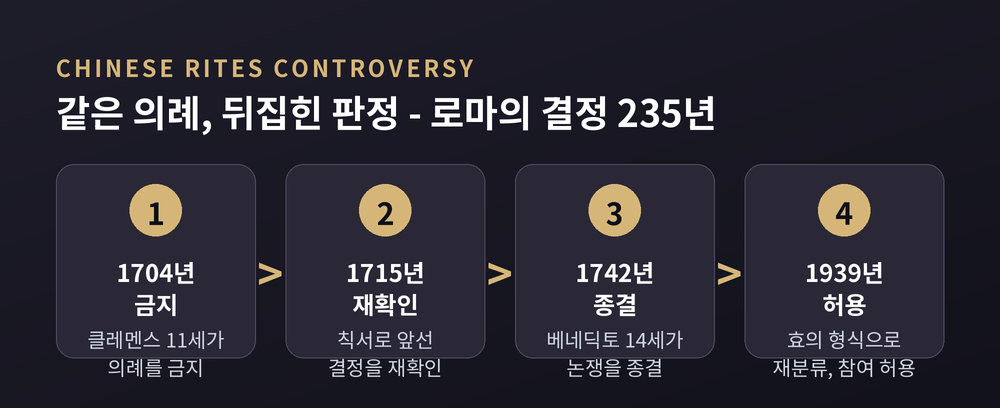
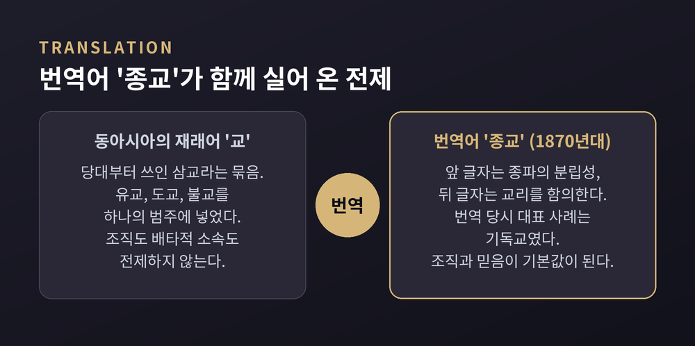
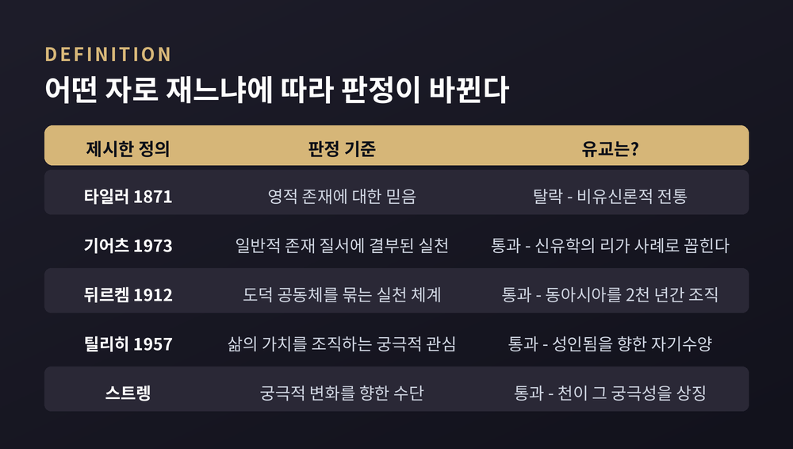
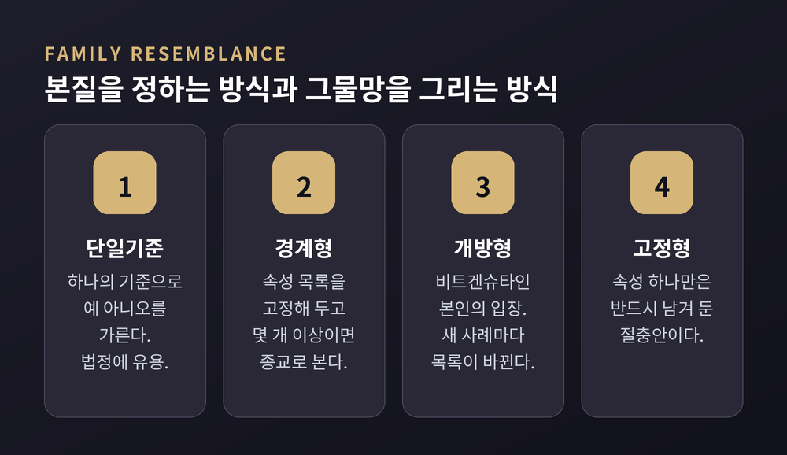
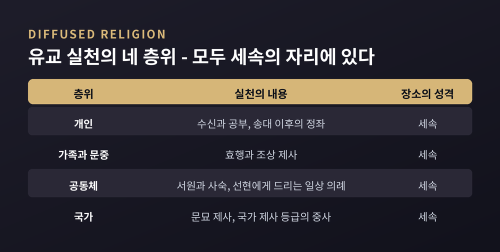

유교는 종교인가, 종교의 정의를 둘러싼 400년 논쟁 정리
이번 글에서는 "유교는 종교인가"라는 오래된 물음을 종교학의 눈으로 정리해 보겠습니다. 결론을 먼저 말씀드리면, 이 질문은 유교의 성질을 묻는 질문이 아닙니다. '종교'라는 말의 정의를 묻는 질문입니다.
세 줄 요약
- 유교가 종교인지 아닌지는 어떤 정의를 쓰느냐에 따라 뒤집힙니다. 대상이 아니라 자(尺)가 결정합니다.
- 신 중심의 실질적 정의로 재면 탈락하고, 사회통합이나 궁극적 관심 같은 기능적 정의로 재면 통과합니다.
- 그래서 학계의 무게중심은 "유교는 종교인가"에서 "유교의 어떤 면이 종교적인가"로 옮겨 왔습니다.
질문의 자리를 옮겨 보면
스탠퍼드 철학백과의 '종교 개념' 항목은 오늘날 '종교'가 하나의 유(類), 즉 여러 구성원을 거느린 사회적 범주로 쓰인다고 설명합니다. 그 전형적 사례 목록에는 유대교·기독교·이슬람·힌두교·불교와 나란히 유교가 들어가 있습니다.
그런데도 논쟁이 끝나지 않습니다. 이유는 단순합니다. 종교를 정의하는 방식이 하나가 아니기 때문입니다.
같은 항목은 이 문제를 두 축으로 나눕니다. 첫째, 종교라는 개념에 본질이 있는가. 둘째, 그 개념이 특정한 시대와 장소에서 만들어져 다른 문화에 얹힌 것은 아닌가. 유교는 이 두 축이 동시에 걸리는 대표적 사례입니다.
케니언대학의 조지프 애들러는 유교의 종교적 지위가 17세기 중국 의례 논쟁 이후 줄곧 논쟁적이었다고 정리합니다. 400년 가까이 결론이 나지 않았다는 뜻입니다.
마테오 리치, "이것은 예배가 아니라 예절입니다"
논쟁의 출발점은 선교 현장이었습니다.
마테오 리치와 예수회 동료들은 조상 제사와 공자 제사를 시민적 의례로 보았습니다. 조상에 대한 존경과 감사를 표하는 사회적 예식이지 종교적 예배가 아니라는 것입니다. 그러니 중국인 개종자가 계속 참여해도 된다고 로마에 주장했습니다.
애들러는 여기에 중요한 단서를 답니다. 리치가 "진짜 예배가 아니라 단순한 공경"이라고 논증한 순간, 그는 이미 아브라함 계열의 종교 모델을 기준으로 삼고 있었다는 것입니다. 실제로 선교사들은 중국 경전에서 '신'과 계시의 흔적을 찾았고, 상제(上帝)와 천(天) 가운데 무엇이 그 자리에 어울리는지를 놓고 다투었습니다.
즉 이 질문은 태어날 때부터 "유교가 기독교를 얼마나 닮았는가"를 재는 형태였습니다.
로마의 판정은 이렇게 흘러갔습니다.

1704년 클레멘스 11세가 의례를 금지했습니다. 1715년 칙서 「엑스 일라 디에」가 이를 재확인했고, 1742년 베네딕토 14세의 「엑스 쿠오 싱굴라리」가 논쟁을 공식 종결했습니다.
반전은 1939년에 일어납니다. 그해 12월 8일 포교성성 훈령 「플라네 콤페르툼 에스트」가 가톨릭 신자의 조상 공경 참여를 허용했습니다. 허용의 논리가 핵심입니다. 이 의례들은 미신적이거나 종교적인 것이 아니라 효와 어른 공경의 형식이라는 것이었습니다. 문서 서두에는 시간이 흐르며 관습과 관념이 변했다는 전제가 명시되어 있습니다.
같은 의례가 1704년에는 종교였고 1939년에는 시민 예절이었습니다. 의례가 변한 것이 아니라 판정 기준과 정치적 맥락이 변한 것입니다.
'종교'라는 번역어가 동아시아에 도착하던 날
두 번째 매듭은 언어에 있습니다.
메이지 유신 이후 일본의 번역자들은 'religion'을 옮길 말을 찾았습니다. 애들러가 앤서니 유를 인용해 전하는 후보들은 신교(神敎), 성도(聖道), 그리고 그냥 교(敎)였습니다. 최종적으로 정착한 말이 종교(宗敎)입니다.

이 말은 새로 지어낸 것이 아닙니다. 최소 6세기까지 거슬러 올라가는 중국 불교 용례에서 가져왔습니다. 불교에서 이 말은 대개 '특정 종파의 가르침', 또는 '존숭받는 가르침'을 뜻했습니다. 어휘 자료는 religion의 역어로 쓰인 첫 용례를 1866년으로 잡고, 이 신조어는 1870년대 일본에서 자리를 잡은 뒤 동아시아 전역으로 퍼졌습니다. 중국에는 19세기 말 일본을 경유해 들어왔고, 량치차오와 캉유웨이 같은 지식인들 사이에서 '종교'와 재래의 '교'가 어떻게 다른가라는 논의를 촉발했습니다.
문제는 이 번역어가 기울어져 있었다는 점입니다.
앤서니 유의 지적에 따르면, 한자 조어를 택한 것 자체가 문화적 타자성을 표시하려는 선택이었습니다. 번역 대상 문헌에서 'religion'의 대표 사례는 기독교였기 때문입니다. 기독교는 당시 일본의 신도·불교와 두 가지 점에서 달랐습니다. 배타적 소속을 요구했고, 교리에 대한 믿음을 훨씬 강조했습니다.
그 성격이 조어에 그대로 들어갔습니다. 앞 글자는 불교 종파를 가리키던 글자로 분립성을 함의하고, 뒤 글자는 교리를 함의합니다. 피터 바이어는 앞 글자에 '조직'의 뜻도 실려 있다고 봅니다.
윌프레드 캔트웰 스미스의 유명한 문장이 이 상황을 압축합니다. "서구가 한 번도 답하지 못했고, 중국은 한 번도 물을 수 없었던 물음."
다만 애들러는 이 정식에 동의하지 않습니다. 로버트 캄파니를 인용해, 전근대 중국에도 범주어가 있었다고 반박합니다. 앞 시기에는 도(道), 뒤 시기에는 교(敎)가 그 역할을 했습니다. 특히 당대(唐代)부터 쓰인 삼교(三敎), 곧 유교·도교·불교라는 묶음은 서로 구별되는 셋을 하나의 범주에 넣은 명백한 토착 개념입니다. 유교는 이미 불교·도교와 같은 리그에서 뛰고 있었다는 것입니다.
실질적 정의와 기능적 정의 — 같은 대상, 다른 판정
이제 자(尺)를 직접 들여다보겠습니다. 종교 정의는 크게 두 계열로 나뉩니다.

실질적 정의는 "무엇을 믿는가"로 판정합니다. 에드워드 타일러는 1871년 '영적 존재에 대한 믿음'을 최소 정의로 제시했습니다. 흥미로운 점은 그의 의도가 배제가 아니라 포용이었다는 사실입니다. 그는 유럽이 이해하지 못한 문화들을 "선교 지도 위에 검게 칠해진" 것으로 취급하는 관행에 반대했고, 그런 민족들도 "사유하는 사람들"이라고 거듭 불렀습니다.
클리퍼드 기어츠는 1973년 이 기준을 넓혔습니다. '일반적 존재 질서'에 결부된 실천을 종교적인 것으로 본 것입니다. 이 확장으로 카르마의 법칙, 도교의 도, 스토아의 로고스가 함께 들어옵니다. 그리고 스탠퍼드 철학백과는 그 목록에 신유학의 리(理)를 명시적으로 포함시킵니다.
기능적 정의는 "어떤 역할을 하는가"로 판정합니다. 에밀 뒤르켐은 1912년 다수를 하나의 도덕 공동체로 묶는 실천 체계를 종교라 불렀습니다. 사회통합의 기능입니다. 파울 틸리히는 1957년 한 사람의 가치를 조직하는 궁극적 관심을 종교라 불렀습니다. 가치의 기능입니다. 두 정의 모두 특이한 실재에 대한 믿음을 요구하지 않습니다.
두 계열은 서로 겹치지 않는 목록을 만들어냅니다. 스탠퍼드 철학백과가 드는 예가 선명합니다. 악령이 두려워 숲에 들어가지 않는 태국 마을 사람은 뒤르켐에게는 종교가 아니라 주술이고, 틸리히에게는 궁극적 관심이 아니라 일상적 관심입니다. 초자연적 존재가 등장하는데도 종교가 아닌 것으로 분류되는 셈입니다.
유교에 대보면 결과는 이렇습니다.
좁은 실질적 정의로는 탈락합니다. 유교는 기본적으로 비유신론적입니다. 천(天)은 신격과 겹치는 면이 있으나 주로 비인격적 절대자이며, 도나 브라만에 가깝습니다. 반면 'deity'라는 말은 인격적 존재를 함의합니다.
기능적 정의로는 무리 없이 통과합니다. 2천 년 넘게 동아시아의 도덕 공동체를 조직했고, 성인(聖)이 되려는 자기수양은 궁극적 관심의 구조를 갖추고 있습니다.
애들러가 특히 적합하다고 소개하는 정의는 프레더릭 스트렝의 것입니다. 종교란 "궁극적 변화를 향한 수단"이며, 여기서 '궁극'은 각 전통에 맞게 이해하면 된다는 것입니다. 문화중립적 정의입니다. 유교에 대입하면 성인됨이 변화의 종착점이고, 천이 그 궁극성을 상징합니다.
본질 대신 그물망 — 가족유사성이라는 우회로
정의 자체가 불가능하다면 어떻게 해야 할까요. 여기서 비트겐슈타인이 등장합니다.

『철학적 탐구』(1953)는 한 개념 아래 놓인 사례들을 살펴보면 여러 특징이 떠올랐다 사라지며, 그 결과가 "겹치고 교차하는 유사성들의 복잡한 그물망"이라고 말합니다. 단일한 정의 속성은 없고 가족유사성만 있습니다.
스탠퍼드 철학백과는 이 다기준 접근을 세 종류로 나눕니다.
경계형은 속성 집합을 고정해 두고 몇 개 이상이면 종교로 봅니다. 윌리엄 올스턴은 아홉 가지 '종교 형성적 특징'을 제시하면서 필요한 개수는 못 박지 않았습니다. "충분한 정도로 충분히 많이 있을 때 우리에겐 종교가 있다"고만 했습니다. 사우스월드는 열두 개, 렘 에드워즈는 열네 개를 들고 더 늘릴 여지를 남겼습니다.
개방형은 비트겐슈타인 본인의 입장입니다. "개념의 외연은 경계로 닫혀 있지 않다"는 것이지요. 새 사례가 들어오면 속성 목록 자체가 갱신됩니다. 개념이 모호할 뿐 아니라 시간에 따라 진화합니다.
고정형은 하나의 속성만은 반드시 요구하는 절충안입니다.
니니안 스마트의 일곱 차원도 같은 계열입니다. 실천·의례, 경험·감정, 서사·신화, 교리·철학, 윤리·법, 사회·제도, 물질. 처음에는 여섯이었고 물질이 일곱 번째로, 나중에 정치가 여덟 번째로 덧붙었습니다.
한계도 분명합니다. 속성 목록을 늘리고 문턱을 낮출수록 범주가 산만해집니다. 스탠퍼드 철학백과는 이 비판 자체는 타당하다고 인정합니다. 그러면서 두 방식의 차이를 이렇게 정리합니다. 단일기준은 예/아니오로 가르는 디지털이고, 다기준은 등급을 만드는 아날로그입니다. 그래서 법정처럼 예/아니오가 필요한 자리에서는 오히려 단일기준이 유용합니다.
학문적 이해에는 아날로그가 어울리고, 제도적 판정에는 디지털이 요구됩니다. 유교 논쟁이 두 갈래로 계속 갈리는 이유가 여기에 있습니다.
제도 종교와 확산 종교 — "종교적이지만 하나의 종교는 아니다"
애들러가 가장 힘을 싣는 구분은 사회학자 C. K. 양이 1961년 제시한 것입니다.

제도 종교는 사원이나 수도원처럼 종교 전용 공간과 성직 조직에서 이루어집니다. 확산 종교는 가족·공동체·국가처럼 '세속적' 사회 제도 안에 스며들어 이루어집니다.
유교의 실천은 네 층위로 나뉩니다. 개인 차원의 수신과 정좌, 가족과 문중 차원의 효행과 조상 제사, 공동체 차원의 서원과 사숙, 국가 차원의 문묘 제사입니다. 조선의 서원도 여기 포함됩니다. 국가 제사 등급에서 문묘 제사는 중사(中祀)에 해당했고, 대사(大祀)는 천지에 드리는 제사였습니다.
네 층위 모두 일차적으로 세속적입니다. 그래서 유교는 확산 종교의 전형입니다. 애들러는 바로 이것이 유교를 "하나의 종교"라 부르기 어려운 이유라고 봅니다. 중국 민간종교를 "하나의 종교"라 부르지 않는 것과 같은 이치라는 것입니다.
윙칫 찬이 1953년에 남긴 정식이 이 지점을 찌릅니다. 여러 논거는 "유교가 종교적이다"라는 결론에는 이를 수 있어도, "유교가 하나의 종교다"라는 결론, 특히 조직된 교회라는 뜻에서는 증명하지 못한다는 것입니다. 다만 이 진술이 70년 전의 것이라는 점은 짚어야 하겠습니다. 애들러 자신도 최근 중국 지식인 사회에서 관련 논의가 상당히 활발해졌다고 각주에 적었습니다.
한 가지 더 있습니다. 유교는 성(聖)과 속(俗)의 이분법을 해체합니다. 뒤르켐과 엘리아데가 발전시킨 이 구분에서 성스러움은 '따로 떼어놓인 것'입니다. 유교에서 성스러움은 다릅니다. 일상 활동의 뒤나 너머가 아니라 그 안에 있으며, 분리가 아니라 궁극적 가치를 지님을 뜻합니다. 허버트 핑가레트가 1972년 책 제목으로 이를 압축했습니다. '성스러움으로서의 세속'입니다.
애들러의 지적은 날카롭습니다. 성속 이원 구조를 판정 기준으로 삼는 순간, 이미 결론을 선취하게 된다는 것입니다.
같은 논법, 다른 쓰임 — 신도와 제사
이 논법이 다른 자리에서 어떻게 쓰였는지를 보면 문제의 성격이 더 또렷해집니다.
메이지 헌법 제28조는 신교의 자유를 담았습니다. 그러나 정부는 신도를 국민에게 실질적으로 강제하려 했습니다. 해법은 신도를 '종교가 아닌 것'으로 분류하는 것이었습니다. 이른바 세속 신사설입니다. 신사는 종교 기관이 아니라 애국 기관으로 규정되었습니다. 메이지 유신기의 한 건백서는 "종교란 창시자의 이론이므로 신도는 종교가 아니다"라고 선언했습니다. 시마조노 스스무에 따르면 신사를 종교와 분리된 국가 기관으로 취급한 것은 국가신도 형성기의 핵심 특징 가운데 하나였습니다.
리치의 논법과 메이지 정부의 논법은 구조가 같습니다. 어떤 의례를 '비종교'로 분류하는 방식입니다. 그런데 목적이 정반대였습니다. 앞은 개종자의 참여를 허용하기 위해, 뒤는 국민의 참여를 강제하기 위해서였습니다.
조선의 사례도 있습니다. 1791년 진산 사건에서 윤지충은 어머니 상을 천주교식으로 치르고 신주를 불태웠습니다. 사촌 권상연과 함께 전주에서 처형되었고, 기록상 한국 최초의 천주교 순교자로 남았습니다. 조상 제사 거부로 천주교가 박해받은 첫 사건입니다. 당시 사대부에게 가묘에 신주를 모시고 예를 올리는 일은 지켜야 할 규범이었습니다.
그로부터 148년 뒤, 같은 의례가 '비종교적 효의 표현'으로 재분류되며 참여가 허용됩니다.
중국에서는 반대 방향의 시도가 있었습니다. 캉유웨이는 1898년 무술변법에서 공교를 국교로 삼자고 제안했고, 1912년 10월 상하이에서 공교회를 세웠습니다. 1913년부터 1916년까지 유교의 국교 명기를 놓고 논쟁이 벌어졌으나 헌법에 실리지 못했습니다. 량치차오는 지적 자유를 억압하고 종파적 분열을 낳으리라며 반대했습니다. 유교를 종교로 '만들려는' 기획조차 기독교 교회를 모델로 삼았다는 점이 눈에 띕니다.
남는 쟁점들
정리하면 입장은 크게 넷으로 갈립니다.
첫째, 종교로 볼 수 있다는 쪽입니다. 문화중립적 정의를 쓰면 유교는 종교입니다. 북미 유교 연구자 상당수는 유교의 종교적 차원이 풍부하게 드러난다는 점을 당연시합니다.
둘째, 종교적이지만 하나의 종교는 아니라는 쪽입니다. 비유신론적이고 제도적 기반이 없다는 이유입니다. 20세기 대부분의 기간 지배적이었던 견해입니다.
셋째, 질문 자체가 잘못됐다는 쪽입니다. 두 명의 스미스에 따르면 '종교' 일반도 개별 '종교들'도 근대 서구의 구성물이므로, 양쪽 항 모두에서 잘못 놓인 질문입니다.
넷째, 셋째에 대한 반박입니다. 애들러는 종교 일반을 말하는 것이 곧 그것이 실체로 존재한다는 뜻은 아니므로, 실체화의 함정을 피하면서도 "무엇이 종교적인가"를 유의미하게 물을 수 있다고 봅니다.
탈랄 아사드는 여기에 한 겹을 더 얹습니다. 종교를 개인의 믿음으로 이해하는 방식 자체가 프로테스탄트적 편향이며, 정의의 역사를 잊는 순간 종교가 권력과 얼마나 엮여 있었는지도 잊게 된다는 것입니다. 스탠퍼드 철학백과는 이 성찰적 흐름을 충실히 소개하면서도, 어떤 정의를 적용하든 고대에도 종교는 존재했다는 반론을 나란히 싣습니다.
저도 어느 한쪽이 옳다고 말할 생각은 없습니다. 이 글의 목적은 판정이 아니라 자(尺)를 드러내는 데 있습니다.
끝으로 한 마디만 더 드리겠습니다.
예전에는 이 물음이 "유교가 종교의 자격을 갖추었는가"를 심사하는 형태였습니다. 지금은 방향이 달라졌습니다. 두웨이밍의 제안처럼, 더 나은 질문은 "유교 공동체에서 종교적이라는 것은 무엇을 뜻하는가"입니다. 애들러 역시 "유교는 종교인가"보다 "유교는 종교적 전통인가"가 옳게 놓인 물음이라고 봅니다.
결국 남는 것은 하나입니다 — 자에 맞지 않는 대상을 만났을 때, 대상을 잘라낼 것인가 자를 다시 만들 것인가.
유교는 400년 동안 그 질문을 되돌려 준 대상이었습니다. 답이 나왔느냐고 물으신다면, 아직은 아니라고 말씀드리겠습니다. 다만 그 사이에 우리가 쓰던 자의 눈금이 어디서 왔는지는 훨씬 또렷해졌습니다.